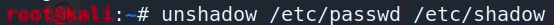

Hash
Hash Algoritması
Sistemlerde bulunan password, keys vb. gibi korunması gerekilen özel bilgiler, belli başlı şifreleme algoritmalarıyla saklanırlar. Bu işleme hash denir.
Wikipedia Tanımı:
SHA-1
İngilizceden çevrilmiştir-Güvenli Karma Algoritmalar, Ulusal Standartlar ve Teknoloji Enstitüsü tarafından ABD Federal Bilgi İşleme Standardı olarak yayınlanan bir şifreleme karma işlevleri ailesidir ve şunları içerir: SHA-0: 1993'te "SHA" adı altında yayınlanan 160 bitlik karma işlevinin orijinal sürümüne uygulanan bir retronym
{kind=link}
Linux de kullanılan MD5 ve SHA512 hash'lerine örnekler;
işaretli kısımda da görüldüğü üzere, dolar işareti arasında ki sayı $1$ 1 ise MD5, $6$ 6 ise SHA512 algoritması ile hash'lendiğini anlıyoruz.
$ işaretinden : işaretine kadar olan kısım hash kısmıdır.
Buda windows da kullanılan LM ve NTLM algoritması ile oluşturulmuş bir hash örneği;
NOT: Burada ki admin:500 kısmında bulunan 500 sayısı admin grubu demektir.
NOT: LM daha eskidir, NTLM daha yeni ve güvenli bir algoritmadır. LM de şifre içinde küçük,büyük harfin bir değeri bir farkı yoktu ve 14 karakterden sonrasını hash'lemiyordu buda bir güvenlik zaafiyeti oluşturuyordu. NTLM algoritmasında ise bir karakterin küçük harfle yazılması ayrı bir hash, büyük harf ise ayrı bir hash oluyor ve 14 karakter sınırı gibi bir kısıtlama yok.
Eğer bir sisteme sızdıysak ve hash'lenmiş verileri görmek istiyorsak “hashdump” komutunu kullanırız;
eğer bu şekilde bilinmeyen komut hatası alırsak da o zaman şunu deneriz;
bu bize information gathering elde edebileceğimiz bir scripti çalıştırır.

Bu aynı zamanda windows içinde geçerlidir. Ele geçirilen cihaz windows ise yine “hashdump” komutu girilir, olmazsa bu sefer de “run post/windows/gather/hashdump” şeklinde “post/” kısmından sonra linux değilde windows yazarak çalıştırılır.
Burada elde ettiğimiz hash'leri kopyalayıp bir text dosyası içine kaydedebiliriz. Tabi text'e kaydederken başında ki [+] kısımlarını siliyoruz;
Linux'de hash
Linux'de hashler iki dosyada tutulur birisi “/etc/passwd” diğeri ise “etc/shadow”
yani linux'de hash iki parçadan oluşur. Bizim bu iki parçalı hash'i birleştirip tek hale getirmemiz gerekiyor. İşte “unshadow” komutu bu parçaları birleştirmeye yarıyor. “unshadow” yani gölgeyi kaldır.
unshadow komutu kullanımı;

bu komut sonucunda bize iki parçadan oluşan “/etc/passwd” ve “etc/shadow” kısımları birleştirilecek ve sonuç bunun gibi bir şey olacak;
devamı...
...
bu hash'i de bir text dosyasına kaydediyoruz.
Online olarak mesela windows'da bir password oluşturduğumuzda onun hash'i nasıl olacağını gösteren siteler var. tobtu.com da bunlardan biri. Bizim sanal windows makinamızda bulunan “Passw0rd!” şifresinin NTLM, LM ve PwDump yani bu iki hash'in (NTLM ve LM) birleşimi de aşağıda görünüyor.